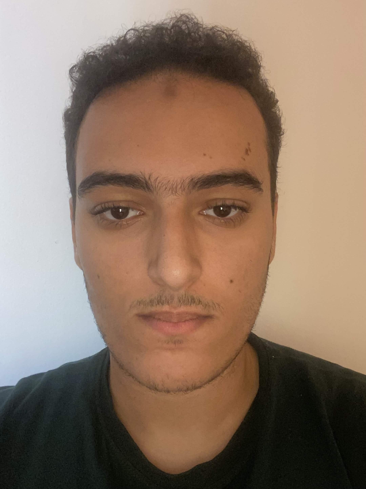

Computer science student at UM6P. I write graphics engines from scratch, build full-stack and AI tools, teach mathematics, and draw.

Top 10 of roughly 500 entrants in a mathematics competition.Top of class throughout secondary school.
I build engines because it is the quickest way to find out what a framework was hiding. Each of these started from an empty file rather than a template.
An assistant I trained to hold a conversation and generate images from a prompt. Most of the work was in the unglamorous half — shaping the data, iterating on what the model actually produced, and building an interface that made the results usable rather than merely impressive.
Token contracts written and tested with Foundry, then deployed to testnet: supply rules, access control, transfer logic, with the test suite treated as part of the deliverable rather than an afterthought.
C, C++, TypeScript, JavaScript, Python, Solidity, SQL, currently learning Java
Rendering pipelines, voxel meshing, scene and entity architecture, collision, linear algebra and transforms
React, Next.js, Node.js, REST APIs, Tailwind CSS, HTML/CSS
Model training and fine-tuning, image generation, conversational interfaces
PostgreSQL, Prisma, Redis
Solidity, Foundry, testnet deployment
Linux (Fedora daily driver), Docker, Git, shell tooling, basic networking and troubleshooting
Automated testing, documentation, error handling, secrets management, separation of concerns
I teach from first principles and adapt to whoever is in front of me, which mostly means finding the exact place the intuition broke and rebuilding from there. Students leave with a method, not a worked answer. Comfortable going past the high-school syllabus where it helps.
I draw constantly, and have done long enough that it stopped being separate from the technical work. It is where the interest in engines and rendering came from in the first place: wanting to know how an image gets made, then wanting to make the thing that makes it.
Updated September 2026